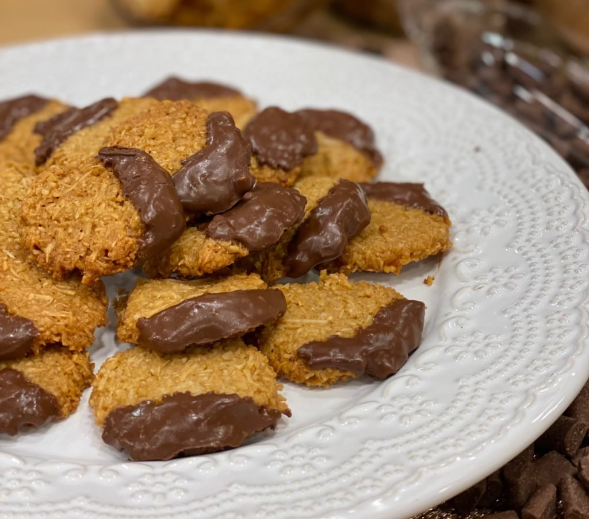

Doces · Biscoitos
Biscoitinhos de chocolate e coco

Ingredientes
- 1¼ xícara de margarina
- 1 xícara de açúcar
- 1⅔ xícara de farinha de trigo
- 1 colher (sopa) de fermento em pó
- ⅓ xícara de cacau em pó
- pitada de sal
- 1 xícara de chocolate em pó
- 3 pacotes pequenos (150 g) de coco ralado
- ¼ xícara de água fervente
- 1 colher (chá) de café solúvel preparado
Modo de preparo
- Bata margarina e açúcar até fofo.
- Peneire farinha, fermento, cacau, sal e chocolate; misture o coco.
- Dissolva café na água fervente.
- Incorpore secos e café em três etapas na batedeira. Refrigere 30 minutos. Preaqueça forno 200 °C.
- Forme bolinhas do tamanho de noz, espaçadas 5 cm. Asse, esfrie e congele.
Observação
Rendimento: 80 biscoitos. Café solúvel: 1 parte café, 2 partes água fervente. Descongelamento: 1 hora.